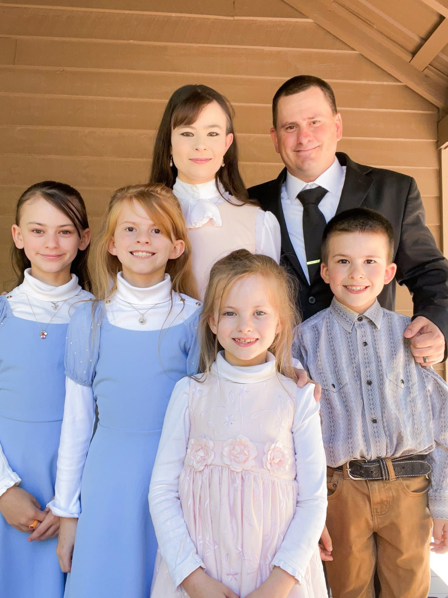

A small non-denominational church where we believe, read, and teach the Bible. We acknowledge Jesus Christ as the Head of the Church, and His Word as our infallible guide.
Plan Your VisitThis SundayTalking Rock Creek Chapel is a small non-denominational church in Murray County, Georgia.
We believe the Bible, we read the Bible, and we teach the Bible. We acknowledge Jesus Christ as the Head of the Church, and we receive His Word as the infallible guide to everlasting life.
Our desire is simple: to know Christ, faithfully proclaim His Word, worship Him together, pray for one another, and grow as a church family.

We acknowledge Jesus Christ as the Head of the Church and seek to honor Him in our worship, teaching, fellowship, and service.
We believe, read, and teach the Bible as the inspired and infallible Word of God and our trustworthy guide for faith and life.
We proclaim salvation and everlasting life through Jesus Christ and seek to faithfully share the good news of the Gospel.

Pastor Joshua Sheets serves Talking Rock Creek Chapel with a desire to faithfully preach and teach the Word of God, point people to Jesus Christ, and care for the church family.
At Talking Rock Creek Chapel, Christ is the Head of the Church, and Scripture is the foundation for everything we believe and teach.
Romans 3:19–20
3:00 PM–5:00 PM
Romans 3:21–26
Church business meeting.
Whether you have been in church all your life or you are looking for a place to begin, we would be glad to have you worship with us.

“And he is the head of the body, the church...”Colossians 1:18